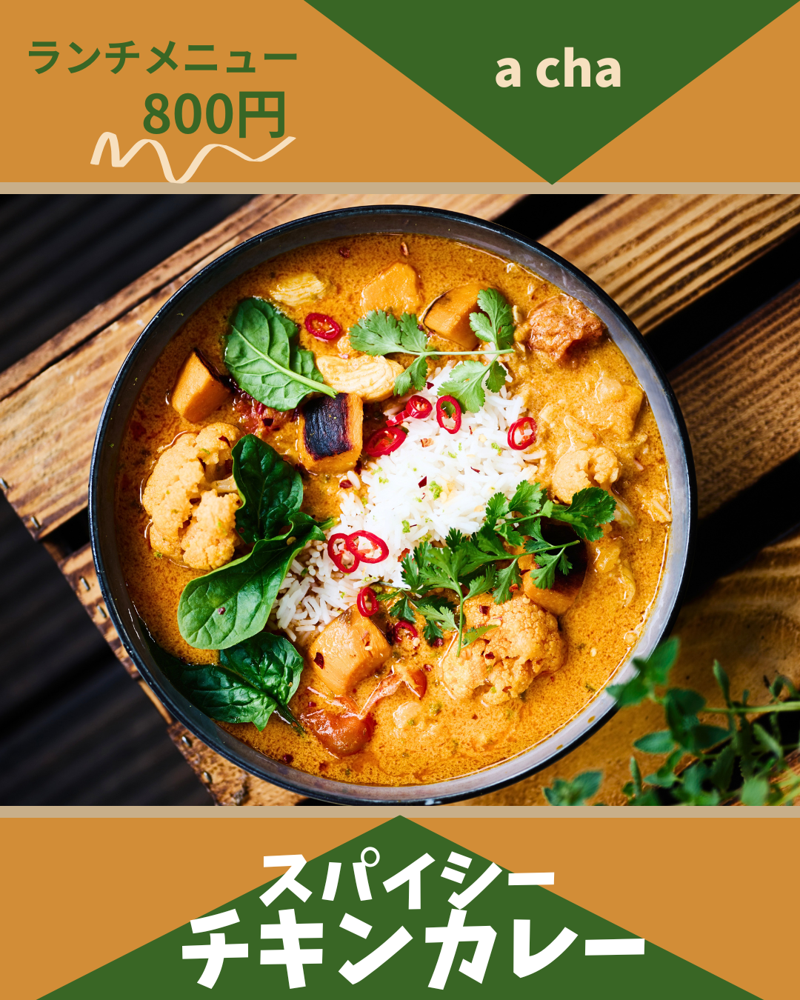

lunch menu バナー制作

制作目的
飲食店のランチメニューを告知し、料理の魅力と価格を分かりやすく 伝えて、来店を促すバナーを制作しました。
ターゲット
ランチタイムに気軽に食事を楽しみたい２０～５０代男女を想定しています。
スパイス料理やエスニック料理に興味のある方をターゲットにしています。
デザインの工夫
料理の写真を大きく配置し、カレーの色や具材がしっかり伝わるようにすることで、
食欲を引き出すビジュアルを意識しました。
オレンジとグリーンをメインカラーに使用し、料理の温かみとスパイス料理らしい
活気を表現しています。
また、**「ランチメニュー800円」を上部に配置して価格を分かりやすく伝え、
中央には料理写真、下部には「スパイシーチキンカレー」とメニュー名を大きく配置し、
情報を上下に整理することで**「ランチ➔価格➔料理」**の順に内容を把握
しやすい構成にしています。
制作時間
40分
使用ツール
Canva